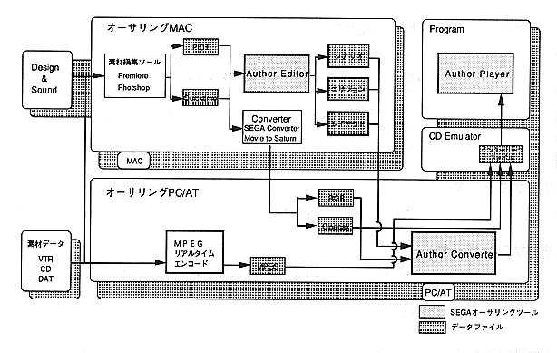

Table 1.2 Saturn author usage environment
Program | Environment | ||
Author Editor |
| ||
Author Converter |
| ||
Author Player | Saturn |
Data and movie files output by the author editor are moved to the author converter PC. Since movie files are large, it is necessary to connect the Macintosh and PC / AT to a LAN such as EtherNET so that data can be transferred from the Macintosh to the PC / AT. Or you can use large capacity media such as MO.